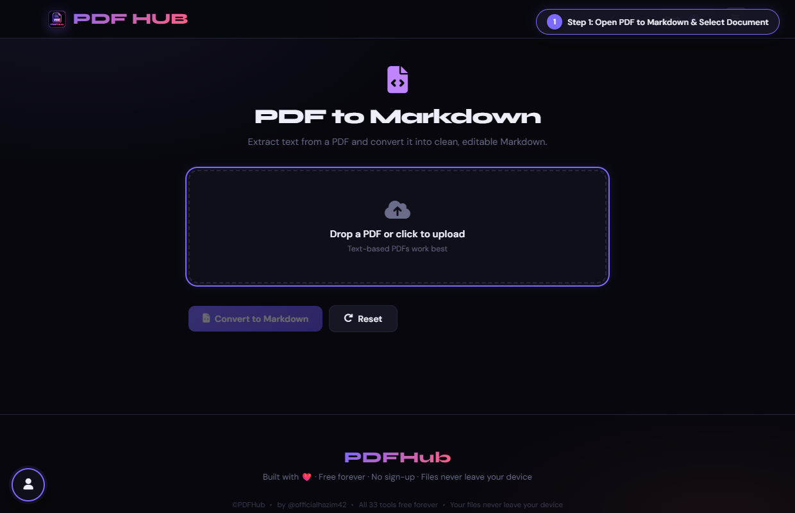
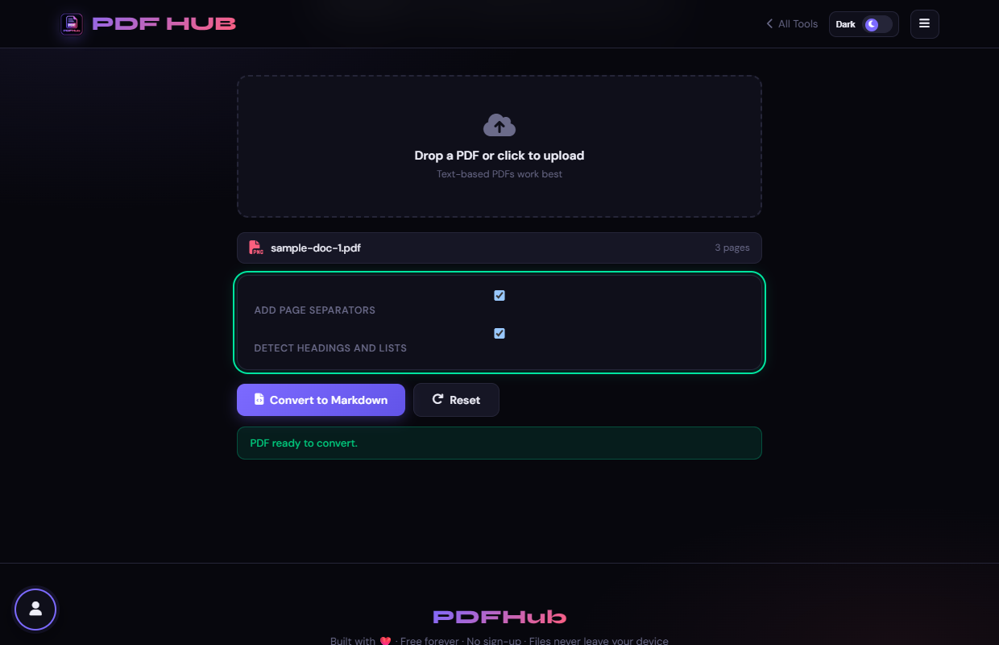
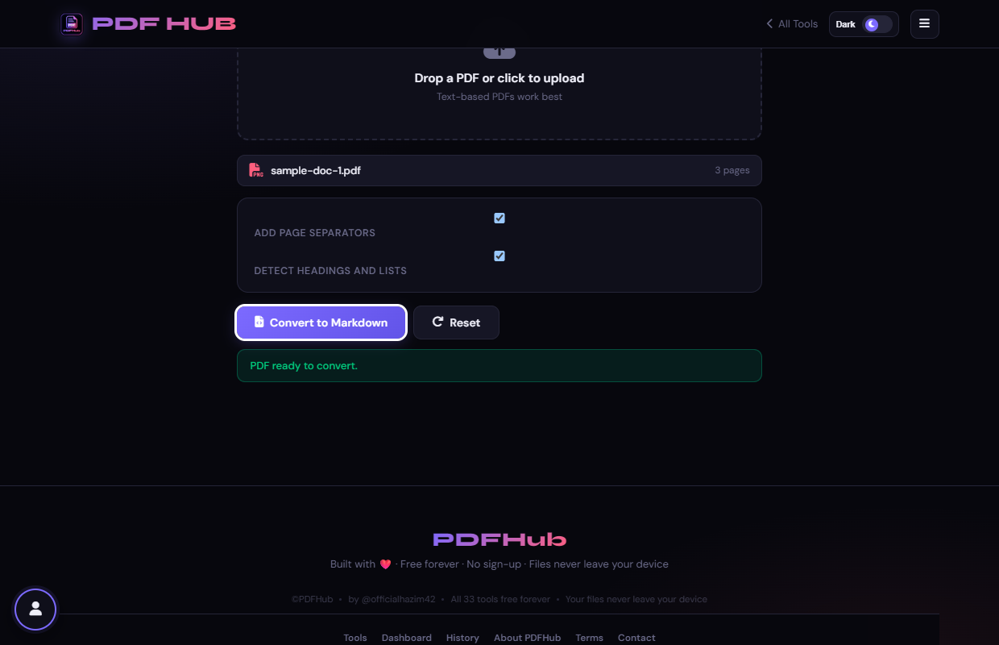

PDF to Markdown
Extract selectable PDF text into editable Markdown with optional headings.
Key Technical Specifications
/tools/pdf-to-markdown.html
pdf.js (text and font styling inspection)
1. Overview & Purpose
PDF to Markdown extracts text with PDF.js, optionally detects headings and lists, and provides an editable output before downloading.
PDF to Markdown is specifically engineered to eliminate the confidentiality risks of third-party cloud converters. By executing entirely in the user's browser runtime, sensitive legal dossiers, financial balance sheets, and personal records remain strictly confined to local device RAM.
2. Key Functionality & Capabilities
- Zero Latency Execution: Documents are processed instantaneously without waiting for network file uploads or remote queue processing.
- Format Compatibility: Built on robust parser specifications capable of handling modern PDF standards (v1.3 through v2.0).
- Hardware Acceleration: Utilizes client-side WebAssembly, multi-core Web Workers, and HTML5 Canvas pipelines for maximal throughput.
- Non-Destructive Operations: Original files remain unmodified on disk; resulting binaries are generated in isolated memory buffers.
3. Step-by-Step Visual Instructions
Follow the visual walkthrough below to execute PDF to Markdown in your browser:
Open Tool & Workspace

Upload a text-based PDF.
Markdown format is ideal for GitHub READMEs, documentation wikis, and LLM prompts.Select & Load Document

Choose whether to add page separators and detect headings and lists.
Documents with bold headers and bullet points convert cleanly into # headings and - lists.Configure Options & Parameters

Select Convert to Markdown and review the editable output.
Page separators (---) make it easy to trace Markdown sections back to original PDF pages.Execute & Download Result
Copy the Markdown or select Download .md.
Code blocks and monospace text are automatically detected and wrapped in backticks.4. Execution Workflow & Underlying Pipeline
What happens under the hood when you trigger document processing:
Extracts text fragments, detects heading levels based on font size differentials, identifies bullet lists and indentation, formats clean Markdown syntax, and provides copy-to-clipboard and .md file download.
Convert to Markdown (#goBtn)
5. Practical Use Cases
Primary Production Workflow
Converting PDF technical documentation or blog articles into Markdown for GitHub repositories or static site generators.
Academic & Educational Work
Ideal for educators and researchers preparing materials, compiling coursework, or standardizing multi-format student submissions.
Personal Document Archive
Safeguard tax filings, contracts, and medical records by performing all transformations in offline-capable local memory.
6. Best Practices & Common Mistakes
Recommended Best Practices
- Review heading detection because visual layout cannot always be inferred from PDF text order.
- Clean up tables and complex layouts manually.
Common Pitfalls to Avoid
- Assuming scanned pages contain selectable text.
- Downloading without reviewing line order.
7. Troubleshooting & Error Recovery
| Observed Issue / Error | Root Cause & Verified Technical Solution |
|---|---|
| Scanned PDFs without text will produce empty Markdown files | Use OCR PDF first. |
8. Privacy & Data Handling
This tool runs 100% locally in your browser RAM using client-side WebAssembly and JavaScript engines. No files or document metadata are ever uploaded to a remote server.
9. Frequently Asked Questions
Yes, the output is an editable text area.
It focuses on extracted text and Markdown structure.
Ready to use PDF to Markdown?
Start processing your PDF files right now. Free, private, and instantaneous.
Launch PDF to Markdown Now